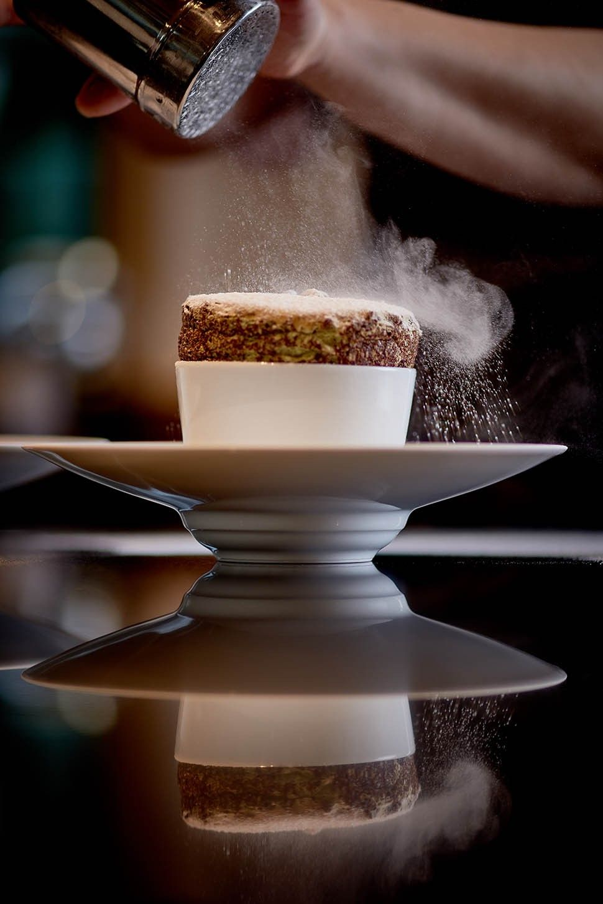

About Carmen's Sweet Creations
Carmen's Sweet Creations began its journey in a humble kitchen, where Carmen, the founder, discovered her passion for baking at a young age. What started as a hobby soon blossomed into a full-fledged business, as Carmen's delectable treats gained popularity among friends and family. Over the years, Carmen honed her skills, experimented with flavors, and perfected her recipes, laying the foundation for what would become Carmen's Sweet Creations.
At Carmen's Sweet Creations, our primary aim is to delight customers with the finest quality desserts made from the heart. We strive to create memorable experiences through our delectable treats, ensuring that every bite brings joy and satisfaction to our customers. Our aim is not only to meet but exceed the expectations of dessert lovers, offering a diverse range of options to cater to every palate.